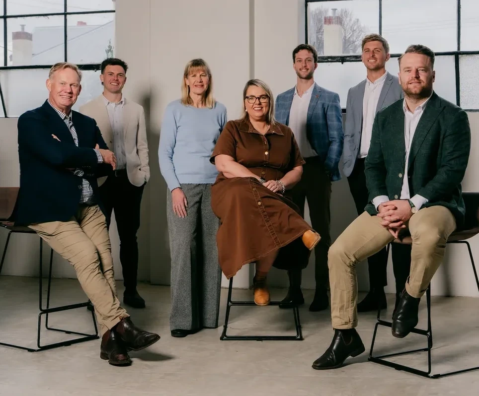

In their own words.
How Australian advice firms are working with Bunya. Each story is written from the firm’s own account, and says plainly what has, and hasn’t, been measured.
 Sydney’s Northern Beaches
Sydney’s Northern Beaches
Growing the firm, not the admin.
A Northern Beaches advice practice built its 75-step advice process into Bunya Command Centre. The whole team was working in it by day three.
Read the story
 Regional Victoria
Regional Victoria
Connecting the work behind the advice.
An award-winning regional advice firm is using Bunya to make client information more useful, connect advice preparation and keep its people focused on the client relationship.
Read the story“The magic of Bunya and their Command Centre is that it gives us more of what matters: more time, more care, more consistency and more capacity to deliver exceptional advice when our clients need it.”
“BunyaAI is helping us work smarter so we can spend more time with clients.”
Context first. Evidence alongside it.
A useful customer story makes clear what changed, where the information came from and what another firm can learn.
The team, the workflow and the specific challenge that prompted a change.
What was delivered, how the team adopted it and any limits to the scope.
Client-approved observations and, where measured, results with a timeframe and method.
Straight answers.
Are the results in these stories measured?
Only where the story says so. Measured results come with a timeframe and method; otherwise a story reports the firm’s own observations, and says that it does.
Who writes the customer stories?
Bunya writes each story from the firm’s own account, such as a completed questionnaire, and quotes reproduce the firm’s supplied wording.
Can we talk to a firm that uses Bunya?
Ask in your demo and we’ll tell you what’s possible.
Start with the work you want to improve.
See your price in a few clicks, or talk it through with us.